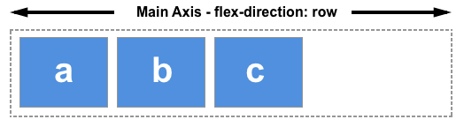
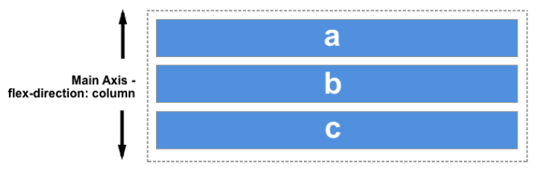
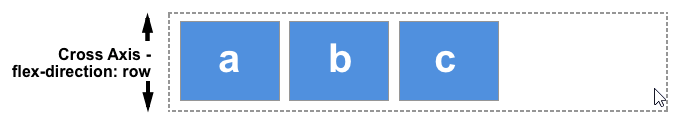
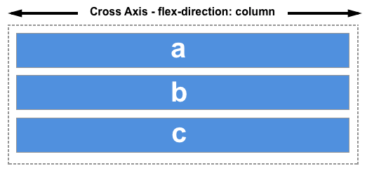
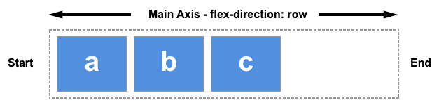
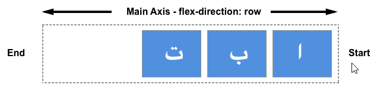
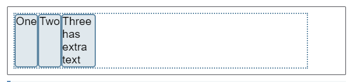
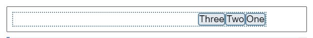
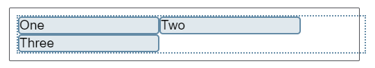

Basic concepts of flexbox
The Flexible Box Module, usually referred to as flexbox, was designed as a one-dimensional layout model, and as a method that could offer space distribution between items in an interface and powerful alignment capabilities. This article gives an outline of the main features of flexbox, which we will be exploring in more detail in the rest of these guides.
When we describe flexbox as being one dimensional we are describing the fact that flexbox deals with layout in one dimension at a time — either as a row or as a column. This can be contrasted with the two-dimensional model of CSS Grid Layout, which controls columns and rows together.
When working with flexbox you need to think in terms of two axes — the main axis and the cross axis. The main axis is defined by the flex-direction property, and the cross axis runs perpendicular to it. Everything we do with flexbox refers back to these axes, so it is worth understanding how they work from the outset.
The main axis
The main axis is defined by flex-direction, which has four possible values:
- row
- row-reverse
- column
- column-reverse
Should you choose row or row-reverse, your main axis will run along the row in the inline direction.

Choose column or column-reverse and your main axis will run from the top of the page to the bottom — in the block direction.

The cross axis
The cross axis runs perpendicular to the main axis, therefore if your flex-direction (main axis) is set to row or row-reverse the cross axis runs down the columns.
If your main axis is column or column-reverse then the cross axis runs along the rows.

Understanding which axis is which is important when we start to look at aligning and justifying flex items; flexbox features properties that align and justify content along one axis or the other.
Another vital area of understanding is how flexbox makes no assumption about the writing mode of the document. In the past, CSS was heavily weighted towards horizontal and left-to-right writing modes. Modern layout methods encompass the range of writing modes and so we no longer assume that a line of text will start at the top left of a document and run towards the right hand side, with new lines appearing one under the other.
You can read more about the relationship between flexbox and the Writing Modes specification in a later article, however the following description should help explain why we do not talk about left and right and top and bottom when we describe the direction that our flex items flow in.
If the flex-direction is row and I am working in English, then the start edge of the main axis will be on the left, the end edge on the right.

If I were to work in Arabic, then the start edge of my main axis would be on the right and the end edge on the left.

In both cases the start edge of the cross axis is at the top of the flex container and the end edge at the bottom, as both languages have a horizontal writing mode.
After a while, thinking about start and end rather than left and right becomes natural, and will be useful to you when dealing with other layout methods such as CSS Grid Layout which follow the same patterns.
An area of a document laid out using flexbox is called a flex container. To create a flex container, we set the value of the area's container's display property to flex or inline-flex. As soon as we do this the direct children of that container become flex items. As with all properties in CSS, some initial values are defined, so when creating a flex container all of the contained flex items will behave in the following way.
- Items display in a row (the flex-direction property's default is row).
- The items start from the start edge of the main axis.
- The items do not stretch on the main dimension, but can shrink.
- The items will stretch to fill the size of the cross axis.
- The flex-basis property is set to auto.
- The flex-wrap property is set to nowrap.
he result of this is that your items will all line up in a row, using the size of the content as their size in the main axis. If there are more items than can fit in the container, they will not wrap but will instead overflow. If some items are taller than others, all items will stretch along the cross axis to fill its full size.
You can see in the live example below how this looks. Try editing the items or adding additional items in order to test the initial behavior of flexbox.

.box {
display: flex;
}
<div class="box">
<div>One</div>
<div>Two</div>
<div>
Three
<br>has
<br>extra
<br>text
</div>
</div>
Changing flex-direction
Adding the flex-direction property to the flex container allows us to change the direction in which our flex items display. Setting flex-direction: row-reverse will keep the items displaying along the row, however the start and end lines are switched.
If we change flex-direction to column the main axis switches and our items now display in a column. Set column-reverse and the start and end lines are again switched.
The live example below has flex-direction set to row-reverse. Try the other values — row, column and column-reverse — to see what happens to the content.

.box {
display: flex;
flex-direction: row-reverse;
}
<div class="box">
<div>One</div>
<div>Two</div>
<div>Three</div>
</div>
Multi-line flex containers with flex-wrap
While flexbox is a one dimensional model, it is possible to cause our flex items to wrap onto multiple lines. In doing so, you should consider each line as a new flex container. Any space distribution will happen across that line, without reference to the lines either side.
To cause wrapping behaviour add the property flex-wrap with a value of wrap. Now, should your items be too large to all display in one line, they will wrap onto another line. The live sample below contains items that have been given a width, the total width of the items being too wide for the flex container. As flex-wrap is set to wrap, the items wrap. Set it to nowrap, which is also the initial value, and they will instead shrink to fit the container because they are using initial flexbox values that allows items to shrink. Using nowrap would cause an overflow if the items were not able to shrink, or could not shrink small enough to fit.

.box {
display: flex;
flex-wrap: wrap;
}
<div class="box">
<div>One</div>
<div>Two</div>
<div>Three</div>
</div>
Find out more about wrapping flex items in the guide Mastering Wrapping of Flex Items.
You can combine the two properties flex-direction and flex-wrap into the flex-flow shorthand. The first value specified is flex-direction and the second value is flex-wrap.
In the live example below try changing the first value to one of the allowable values for flex-direction - row, row-reverse, column or column-reverse, and also change the second to wrap and nowrap.
